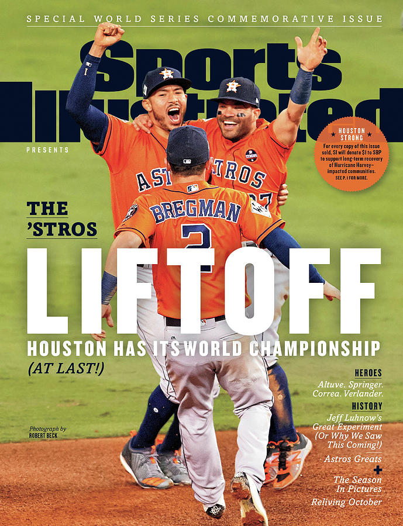
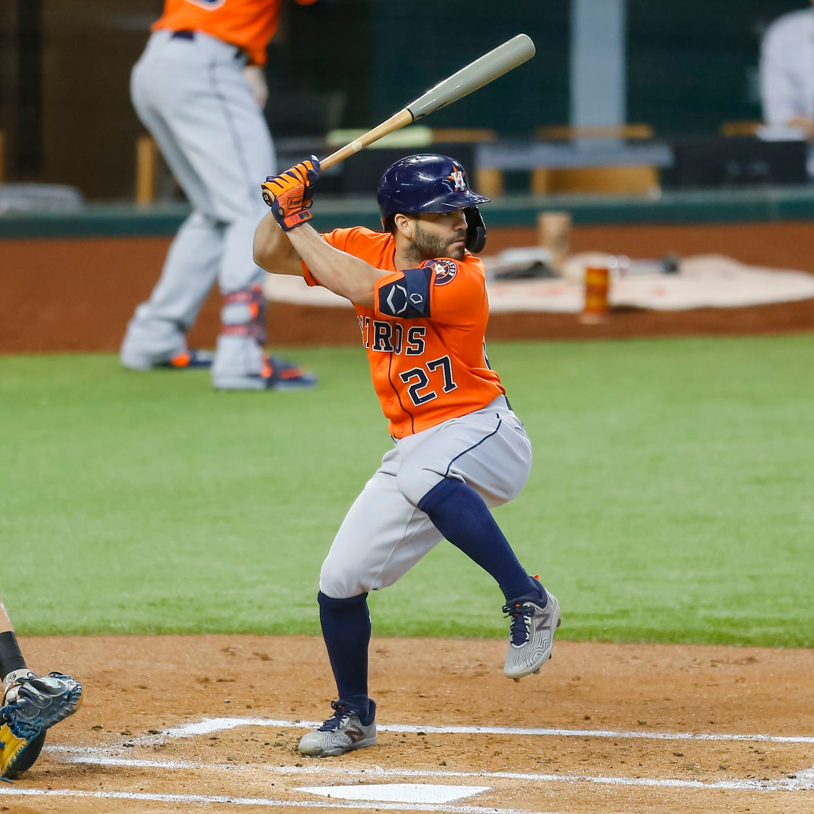
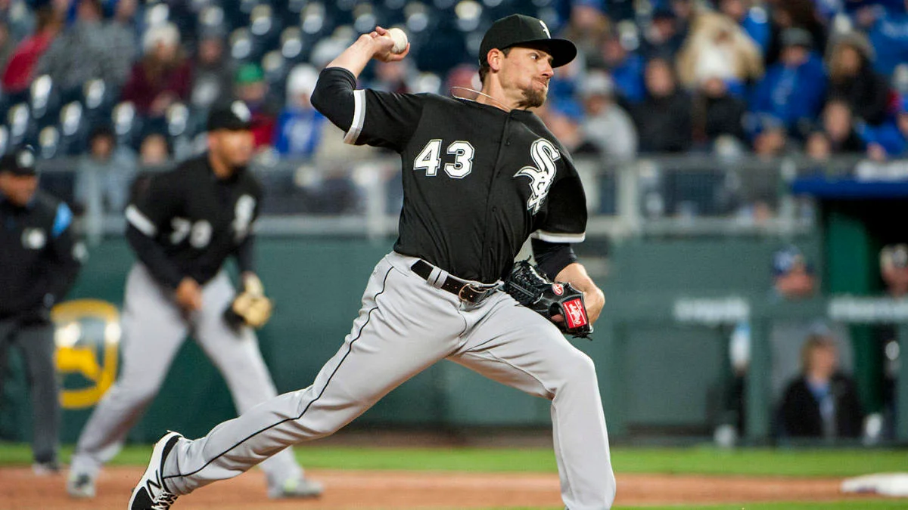
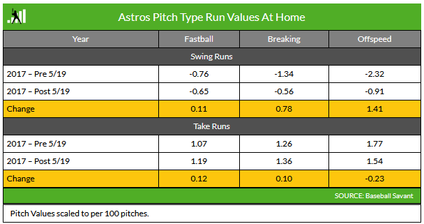
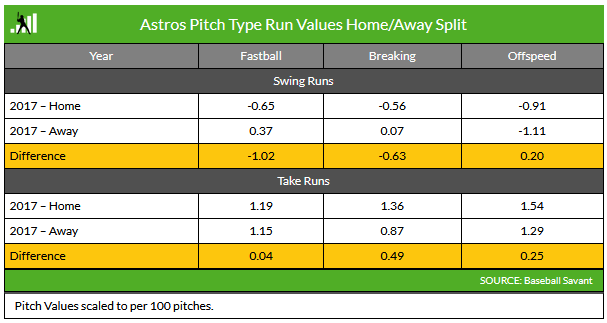
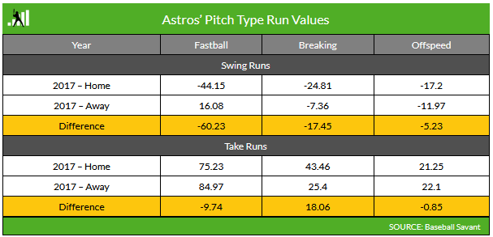

2017 Astros

The 2017 Astros won the World Series
Wins (out of 162 games):
- 2011: 56
- 2012: 55
- 2013: 51
- 2014: 70
- 2015: 86
- 2016: 84
- 2017: 101
Strikeout Reduction

The 2017 Astros won the World Series
Team strikeouts (Astros’ hitters):
- 2011: 1164
- 2012: 1365
- 2013: 1535
- 2014: 1442
- 2015: 1392
- 2016: 1452
- 2017: 1087
Mike Fiers
“Mike Fiers Admits Astros Stole Signs Electronically During 2017 MLB Season” — Bleacher Report, November, 2019
- 2011 - 2015: Milwaukee
- 2015 - 2018: Houston
- 2018 - 2019: Detroit
- 2019 - 2021: Oakland
Houston was also accused of cheating during the 2018 and 2019 playoffs.
Danny Farquhar

“there was a banging from the dugout, almost like a bat hitting the bat rack every time a changeup signal got put down. After the third one, I stepped off. I was throwing some really good changeups and they were getting fouled off. After the third bang, I stepped off.” — referring to a White Sox at Astros game on September 21, 2017
Fallout
- “Manager AJ Hinch and general manager Jeff Luhnow were suspended for a year by Major League Baseball”
- “The Astros were fined $5 million … They also will forfeit their first- and second-round picks in the 2020 and 2021 drafts.”
- Interviews with Astros players
Pitch Type

analysis credit: Fangraphs
Splits

analysis credit: Fangraphs
Also: highest-leverage at-bats
Splits

analysis credit: Fangraphs
References
- https://www.baseball-reference.com/teams/HOU/
- https://bleacherreport.com/articles/2862408-mike-fiers-admits-astros-stole-signs-electronically-during-2017-mlb-season
- https://www.chicagotribune.com/sports/white-sox/ct-cb-houston-astros-sign-stealing-danny-farquhar-white-sox-20200117-ckfumn2wfzhabbb25ltl24gfb4-story.html https://blogs.fangraphs.com/which-players-might-have-benefited-from-the-astros-sign-stealing/
Reddit deep dives:
- https://old.reddit.com/r/baseball/comments/fdh3iu/astros_cheating_analysis/
- https://old.reddit.com/r/baseball/comments/f9csgg/analyzing_astros_trash_can_banging_signal/
- https://old.reddit.com/r/baseball/comments/dw1u4g/astros_sign_stealing_video_footage_megathread_for/
- https://old.reddit.com/r/baseball/comments/evopl2/adams_im_an_astros_fan_to_understand_the_scope_of/
- https://old.reddit.com/r/baseball/comments/exkkoz/i_went_through_the_footage_provided_by_uatadams/